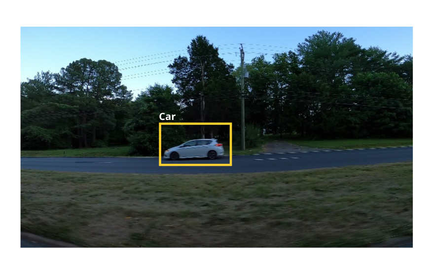
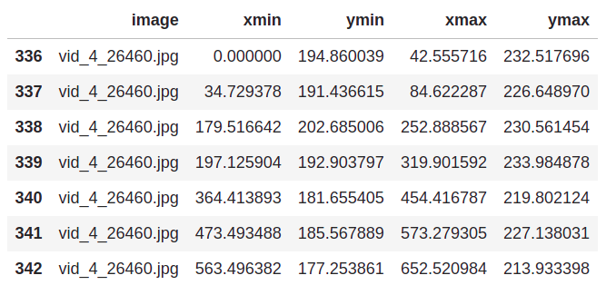
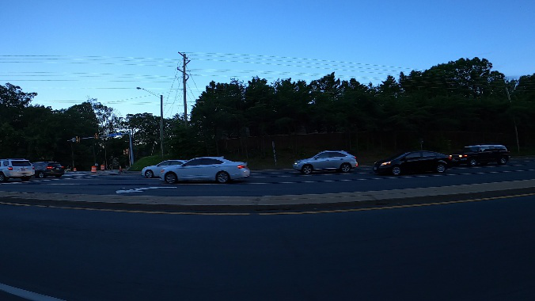
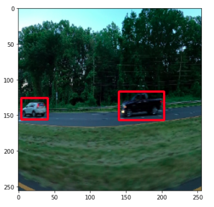

Object detection¶
Introduction¶
In this chapter we will train a model to detect cars present in an image. For each car present in the image, the model should predict the bounding box that encloses the car as shown below:
For each bounding box, the model should predict 4 numbers/coordinates(xmin, ymin, xmax, ymax). As you can see from the detailed figure below, xmin and ymin represents the top left coordinate of the bounding box, where as, xmax and ymax represents the bottom right coordinates of the bounding box:
Dataset¶
The dataset we will be using for training can be found here. All the images for our training set is under training_images folder and its bounding box coordinates can be found in train_solution_bounding_boxes (1).csv. This is how the csv looks like:
The first column represents the name of the image and the remaining 4 columns represent the coordinates of the bounding box for that image.
Preparing the dataframe¶
First let’s read the csv file:
import pandas as pd
df = pd.read_csv("../input/car-object-detection/data/train_solution_bounding_boxes (1).csv")
In the above dataframe, there are multiple rows with the same image name as shown below:
This means that there are certain images that has multiple bounding boxes(for multuple cars), here is an image which has multiple rows in the dataframe:
We will combine all those bounding boxes together, but, before that let’s create a column that contains the area of the bounding boxes, for that we need the height and width of the bounding boxes:
df['bbox_width'] = df['xmax']-df['xmin']
df['bbox_height'] = df['ymax']-df['ymin']
Now let’s calculate the area and store it in a new column:
df['area'] = df['bbox_width']*df['bbox_height']
Now we will group and put all bounding boxes of same image in a single row instead of multiple rows:
# group by similar image names
df = df.groupby('image').agg(list)
df.reset_index(inplace=True)
Since the dataframe is ready, let’s split it into training and validation sets:
from sklearn.model_selection import train_test_split
train_df, val_df = train_test_split(df, test_size=0.1, shuffle=False)
train_df.reset_index(inplace=True)
val_df.reset_index(inplace=True)
Loading the images and bounding boxes¶
Now we will write a data set loading class with pytorch. This class will take the dataframe(either training or validation), root path where the images are present and some augmentations/transforms to apply to the image.
Before writing the whole dataset loading class, let’s take a sample image and it’s bounding boxes from the dataframe to see what is really happening while loading our data.
First let’s take a sample image containing multiple bounding boxes:
sample = train_df.iloc[215]
img_name = sample['image']
bboxes = sample[['xmin', 'ymin', 'xmax', 'ymax']].values
We will read the image using opencv, convert it to RGB format and normalize it:
import cv2
from pathlib import Path
# root path where images are present
img_root_path = Path("../input/car-object-detection/data/training_images")
img = cv2.imread(str(img_root_path/img_name))
img = cv2.cvtColor(img, cv2.COLOR_BGR2RGB)/255.0
Since our bounding box coordinates are in a list format, let’s convert all of them into pytorch tensor and store it in tuple format:
import torch
bboxes = tuple(map(torch.tensor, zip(*bboxes)))
print(bboxes)
Output:
(tensor([ 0.0000, 194.8600, 42.5557, 232.5177]),
tensor([ 34.7294, 191.4366, 84.6223, 226.6490]),
tensor([179.5166, 202.6850, 252.8886, 230.5614]),
tensor([197.1259, 192.9038, 319.9016, 233.9849]),
tensor([364.4139, 181.6554, 454.4168, 219.8021]),
tensor([473.4935, 185.5679, 573.2793, 227.1380]),
tensor([563.4964, 177.2539, 652.5210, 213.9334]))
Each tensor represents the xmin, ymin, xmax and ymax of a bounding box. Having 7 tensors means that we have 7 bounding boxes in total.
Now we will stack all the above tensors into a single tensor of shape (7, 4):
bboxes = torch.stack(bboxes, dim=0)
print(bboxes)
Output:
tensor([[ 0.0000, 194.8600, 42.5557, 232.5177],
[ 34.7294, 191.4366, 84.6223, 226.6490],
[179.5166, 202.6850, 252.8886, 230.5614],
[197.1259, 192.9038, 319.9016, 233.9849],
[364.4139, 181.6554, 454.4168, 219.8021],
[473.4935, 185.5679, 573.2793, 227.1380],
[563.4964, 177.2539, 652.5210, 213.9334]])
We will be using a faster rcnn model for our object detection task. This model requires the class/label corresponding to each bounding box. Thus, corresponding to each bounding box in an image, we should provide a label. In our case we only have bounding boxes for car, so we only have one label. The label 0 is reserved for background, so we will use 1 as the label for car.
So, let’s create a tensor containing 1s that has the same length as the number of bounding boxes in the image:
labels = torch.ones(len(bboxes), dtype=torch.int64)
Now, let’s define the transforms/augmentations that we wish to apply to the image. We will use the ‘albumentations’ library for this. We will resize the image and convert it to tensors.
Since this is an object detection task, we cannot simply resize the image without resizing the bounding boxes. But albumentations will automatically take care of this if we pass the bbox parameter to our transforms, it requires the bounding box format we are using as well as the key to store the labels.
Note: The bounding box format we are using is (xmin, ymin, xmax, ymax) which is the ‘pascal voc’ format.
import albumentations as A
from albumentations.pytorch.transforms import ToTensorV2
transforms = A.Compose([
A.Resize(256, 256, p=1.0), # resize the image
ToTensorV2(p=1.0),
], bbox_params={'format': 'pascal_voc', 'label_fields': ['labels']}) # bounding box parameters
Let’s apply the transforms to our data:
augmented = transforms(image=img, bboxes=bboxes, labels=labels)
The output will be a dictionary containing labels, augmented image and bounding boxes.
After augmentation, the bounding boxes are stores in a list as tuples. But our model expects them as stacked tensors. So, we have to convert the bounding boxes to that format.
We will convert each bounding box to tensor format, store them in a tuple and then stack them to a single tensor as we did earlier:
# convert to tensor
bboxes = map(torch.tensor, zip(*augmented['bboxes']))
# store as tuples
bboxes = tuple(bboxes)
# stack into a single tensor
bboxes = torch.stack(bboxes, dim=0)
Now let’s convert the data types to the format as required by the model(otherwise we will get errors while training):
img = augmented['image'].type(torch.float32)
bboxes = bboxes.permute(1, 0).type(torch.float32)
Our image, bounding boxes and its labels are ready. But the model expects some more elements apart from these, which includes ‘area’ and ‘iscrowd’.
The term ‘area’ is nothing but the area of the bounding box. We have already calculated it earlier, so let’s just take it and convert to a pytorch tensor:
area = sample['area']
area = torch.as_tensor(area, dtype=torch.float32)
But what is this ‘iscrowd’ element? This element is helpful if we want our model to exclude certain bounding boxes.
If ‘iscrowd’ is 1, that bounding box is not considered by the model. But we want the model to consider all bounding boxes. So we will put the value 0 for ‘iscrowd’ corresponding to each bounding box:
iscrowd = torch.zeros(len(bboxes), dtype=torch.int)
Since everything is ready, lets create a dictionary and store all the target data there:
target = {}
target['boxes'] = bboxes
target['labels'] = labels
target['area'] = area
target['iscrowd'] = iscrowd
Note
Make sure that the keys of the target dictionary has the same name as above, because the model expects it that way.
Now let’s wrap everything into our data set loading class:
from torch.utils.data import Dataset
class LoadDataset(Dataset):
def __init__(self, df, img_dir, transforms):
super().__init__()
self.df = df
self.img_dir = img_dir
self.transforms = transforms
def __len__(self): return len(self.df)
def __getitem__(self, idx):
# read & process the image
filename = self.df.loc[idx, 'image']
img = cv2.imread(str(self.img_dir/filename))
img = cv2.cvtColor(img, cv2.COLOR_BGR2RGB)/255.0
# get the bboxes
bboxes = self.df.loc[idx, ['xmin', 'ymin', 'xmax', 'ymax']].values
bboxes = tuple(map(torch.tensor, zip(*bboxes)))
bboxes = torch.stack(bboxes, dim=0)
# create labels
labels = torch.ones(len(bboxes), dtype=torch.int64)
# apply augmentations
augmented = self.transforms(image=img, bboxes=bboxes, labels=labels)
# convert bbox list to tensors again
bboxes = map(torch.tensor, zip(*augmented['bboxes']))
bboxes = tuple(bboxes)
bboxes = torch.stack(bboxes, dim=0)
img = augmented['image'].type(torch.float32)
bboxes = bboxes.permute(1, 0).type(torch.float32)
iscrowd = torch.zeros(len(bboxes), dtype=torch.int)
# bbox area
area = self.df.loc[idx, 'area']
torch.as_tensor(area, dtype=torch.float32)
target = {}
target['boxes'] = bboxes
target['labels'] = labels
target['area'] = area
target['iscrowd'] = iscrowd
return img, target
Finally, let’s load the training and validation datasets:
train_ds = LoadDataset(train_df, img_root_path, transforms)
val_ds = LoadDataset(val_df, img_root_path, transforms)
Training the model¶
It’s time to build our model class using pytorch lightning :) This is almost similar to what we did in the earlier chapters. For the model, we will use a pretrained faster rcnn model with resnet50 backbone. In our case, we only have two classes, 0 for background and 1 for car, thus, we will slightly modify the number of units in the last layer as shown below:
from torchvision.models.detection import fasterrcnn_resnet50_fpn
from torchvision.models.detection.faster_rcnn import FastRCNNPredictor
# load pretrained model
model = fasterrcnn_resnet50_fpn(pretrained=True)
# get input features of prediction layer
in_features = model.roi_heads.box_predictor.cls_score.in_features
# modify the prediction layer with required number of classes
model.roi_heads.box_predictor = FastRCNNPredictor(in_features, num_classes=2)
Now let’s build the model class.
As usual we will write our
__init__method, which includes the batch size, learning rate and the model. For model creation, we will use a method calledcreate_model()which will contain the code we’ve written above.
from pytorch_lightning import LightningModule
class ObjectDetector(LightningModule):
def __init__(self):
super().__init__()
self.lr = 1e-3
self.batch_size = 16
self.model = self.create_model()
def create_model(self):
model = fasterrcnn_resnet50_fpn(pretrained=True)
in_features = model.roi_heads.box_predictor.cls_score.in_features
model.roi_heads.box_predictor = FastRCNNPredictor(in_features, num_classes=2)
return model
The forward method just takes the input, passes it to the model and returns the model outputs:
class ObjectDetector(LightningModule):
def forward(self, x):
return self.model(x)
The number of bounding boxes may be different for each image, so, we will need a
collate_fnto pass to our dataloaders.
from torch.utils.data import DataLoader
class ObjectDetector(LightningModule):
def collate_fn(self, batch):
return tuple(zip(*batch))
def train_dataloader(self):
return DataLoader(
train_ds,
batch_size=self.batch_size,
shuffle=True,
collate_fn=self.collate_fn
)
def val_dataloader(self):
return DataLoader(
val_ds,
batch_size=self.batch_size,
shuffle=False,
collate_fn=self.collate_fn
)
Now we will configure our
AdamWoptimizer.
class ObjectDetector(LightningModule):
def configure_optimizers(self):
return torch.optim.AdamW(self.model.parameters(), lr=self.lr)
Finally, it’s time to write our training step. But here, instead of giving only the predictions, the model outputs a bunch of loss values as shown below:
{'loss_classifier': tensor(0.5703, grad_fn=<NllLossBackward>),
'loss_box_reg': tensor(0.1132, grad_fn=<DivBackward0>),
'loss_objectness': tensor(0.0085, grad_fn=<BinaryCrossEntropyWithLogitsBackward>),
'loss_rpn_box_reg': tensor(0.0079, grad_fn=<DivBackward0>)}
So, we should sum all these losses together and return it in training step for backward propagation. Thus, the code for training will look like this:
class ObjectDetector(LightningModule):
def training_step(self, batch, batch_idx):
inputs, targets = batch
loss_dict = self.model(inputs, targets)
complete_loss = sum(loss for loss in loss_dict.values())
self.log("train_loss", complete_loss, prog_bar=True)
return {'loss': complete_loss}
During validation, pytorch lightning automatically calls
model.eval()for us. While doing this, the behaviour of the model will change again. This time, the model will output the bounding box prediction and probabilites of our label(car). So we need to take this into account while implementing the validation step.
So, during validation, we take the predicted bounding box coordinates and the target bounding boxes to calculate intersection over union(IOU) which is a commonly used metric for object detection. We will be using box_iou function from torchvision for calculating IOU.
{kind=link}
IOU varies from 0 to 1, values closer to 0 are considered bad whereas the ones closer to 1 are considered good predictions.
In the validation step, we will calculate the IOU for each batch and return the mean IOU for that batch:
from torchvision.ops import box_iou
class ObjectDetector(LightningModule):
def validation_step(self, batch, batch_idx):
inputs, targets = batch
outputs = self.model(inputs)
# calculate IOU and return the mean IOU
iou = torch.stack(
[box_iou(target['boxes'], output['boxes']).diag().mean() for target, output in zip(targets, outputs)]
).mean()
return {"val_iou": iou}
Similar to
validation_step(), lightning also provides avalidation_epoch_end()method, which takes as input the list containing all the values returned byvalidation_step(). In pure pytorch, these two methods will be as shown below:
for batch_idx, batch in val_dataloader:
batch_out = validation_step(batch, batch_idx)
val_out_list.append(batch_out)
validation_epoch_end(val_out_list)
So, from validation_step() we will get the IOU for each batch, this is appended to a list and passed to validation_epoch_end(). So, the only task remaining is to calculate the mean IOU from the list passed to validation_epoch_end() and log it:
class ObjectDetector(LightningModule):
def validation_epoch_end(self, val_out):
# calculate overall IOU across batch
val_iou = torch.stack([o['val_iou'] for o in val_out]).mean()
self.log("val_iou", val_iou, prog_bar=True)
return val_iou
That was a whole lot of code, but we are done with the model class now. If you need the complete code, its here:
class ObjectDetector(LightningModule):
def __init__(self):
super().__init__()
self.lr = 1e-3
self.batch_size = 16
self.model = self.create_model()
def create_model(self):
model = fasterrcnn_resnet50_fpn(pretrained=True)
in_features = model.roi_heads.box_predictor.cls_score.in_features
model.roi_heads.box_predictor = FastRCNNPredictor(in_features, num_classes=2)
return model
def forward(self, x):
return self.model(x)
def collate_fn(self, batch):
return tuple(zip(*batch))
def train_dataloader(self):
return DataLoader(
train_ds,
batch_size=self.batch_size,
shuffle=True,
collate_fn=self.collate_fn
)
def val_dataloader(self):
return DataLoader(
val_ds,
batch_size=self.batch_size,
shuffle=False,
collate_fn=self.collate_fn
)
def configure_optimizers(self):
return torch.optim.AdamW(self.model.parameters(), lr=self.lr)
def training_step(self, batch, batch_idx):
inputs, targets = batch
loss_dict = self.model(inputs, targets)
complete_loss = sum(loss for loss in loss_dict.values())
self.log("train_loss", complete_loss, prog_bar=True)
return {'loss': complete_loss}
def validation_step(self, batch, batch_idx):
inputs, targets = batch
outputs = self.model(inputs)
# calculate IOU and return the mean IOU
iou = torch.stack(
[box_iou(target['boxes'], output['boxes']).diag().mean() for target, output in zip(targets, outputs)]
).mean()
return {"val_iou": iou}
def validation_epoch_end(self, val_out):
# calculate overall IOU across batch
val_iou = torch.stack([o['val_iou'] for o in val_out]).mean()
self.log("val_iou", val_iou, prog_bar=True)
return val_iou
Now it’s time to train the model using the lightning trainer:
from pytorch_lightning import Trainer
detector_model = ObjectDetector()
trainer = Trainer(
accelerator='auto',
devices=1,
auto_lr_find=True,
max_epochs=5,
)
trainer.tune(detector_model)
trainer.fit(detector_model)
Testing the model¶
Let’s take a sample image from the validation set and visualize the bounding boxes predicted by the model:
import matplotlib.pyplot as plt
sample = val_ds[14]
img = sample[0]
detector_model.eval()
with torch.no_grad():
out = detector_model([img])
# convert to numpy for opencv to draw bboxes
img = img.permute(1, 2, 0).numpy()
Get the predicted bounding boxes and labels:
# predicted bounding boxes
pred_bbox = out[0]['boxes'].numpy().astype(int)
# predicted labels
pred_label = out[0]['scores']
Draw the predicted bounding boxes on the image:
# draw bounding boxes on the image
for bbox, label in zip(pred_bbox, pred_label):
# check if the label corresponding to bbox is for car
if label>=0.5:
cv2.rectangle(
img,
(bbox[0], bbox[1]),
(bbox[2], bbox[3]),
(255, 0, 0), thickness=2,
)
Now let’s visualize the image along with the predicted bounding boxes:
plt.figure(figsize=(16, 6))
plt.imshow(img)
Output:
Wohoooo, the model detected both cars, its working🥳.